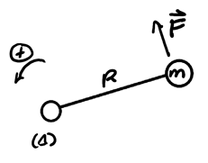
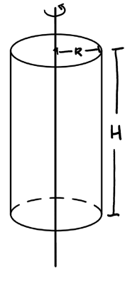
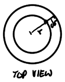
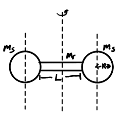
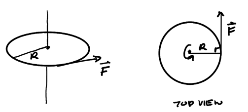
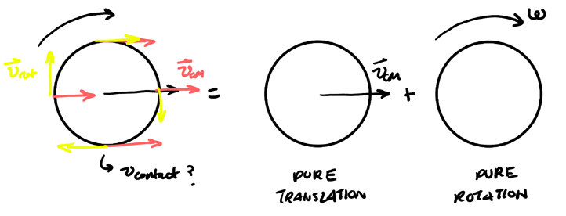
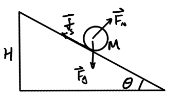

Rotational Motion
Table of Contents
1. Angular Quantities
We can understand the angular quantities by using a metaphor with the translational quantities. The following are the rotational analogues to the translational quantities of displacement, position, velocity, and acceleration:
| Quantity | Translational | Rotational |
|---|---|---|
| Displacement | \(\Delta x\) | \(\Delta \theta\) |
| Position | \(r\) | \(\theta\) |
| Velocity | \(v=\frac{\text{d}r}{\text{d}t}\) | \(\omega = \frac{\text{d}\theta}{\text{d}t}\) |
| Acceleration | \(a=\frac{\text{d}^2r}{\text{d}t^2}\) | \(\alpha =\frac{\text{d}^2\theta}{\text{d}t^2}\) |
The rotational analogues, then, are angular displacement, angular position, angular velocity, and angular acceleration.
1.1. Conversion Between Angular and Linear Quantities
When considering movement around a circle with radius \(R\), we can begin with the arc length formula to determine the position:
\begin{align} \boxed{s = R\theta} \end{align}Taking the derivative with respect to time, we obtain velocity:
\begin{align} \boxed{v = R\omega} \end{align}Substituting this into radial acceleration, we get:
\begin{align} \boxed{a_{\text{rad}} = R\omega^2} \end{align}And finally, for tangential accleration, note that:
\begin{align} a_{\text{tan}} &= \frac{\text{d}v}{\text{d}t} \notag \\ &= \frac{\text{d}}{\text{d}t}(R\omega) \notag \\ &= R\frac{\text{d}\omega}{\text{d}t} \notag \end{align}Thus:
\begin{align} \boxed{a_{\text{tan}} = R\alpha} \end{align}Critically, notice that all points on a rigid system have the same \(\Delta\theta\) and \(\omega\) but different linear quantities:

1.2. Rotational Kinematic Equations
Using the linear kinematic equations as a metaphor, we can also establish equivalent kinematic equations for rotational motion:
\begin{align} \begin{cases} \omega(t) = \alpha t + \omega_0 \\ \theta(t) = \frac{1}{2}\alpha t^2 + \omega_0 t + \theta_0 \\ \omega^2 = \omega_0^2 + 2\alpha\Delta\theta \\ \Delta \theta = \frac{\omega + \omega_0}{2}\Delta t \end{cases} \end{align}2. Torque
We know that force causes translational motion, but what is responsible for a change in rotational motion?
Consider applying a force on a wrench to rotate a nut. Notice that three things affect how effective it is at changing the rotational motion of the nut: how large the magnitude is, the distance away from the center the force is applied, and the angle at which it is applied (with a maximum at 90 degrees).
This quantity is known as torque. We can express all of the above relations using a cross product:
\begin{align} \boxed{\vec{\tau} = \vec{r} \times \vec{F}} \end{align}The right-hand rule can be used to determine the direction of torque. Most of the time we will make an additional choice of positive direction of rotation (either clockwise or counter-clockwise) to determine the sign of torque.
If multiple torques are acting on the same system with respect to some axis of ratation, we can calculate net torque by summing all of the torques together.
3. Rotational Inertia
It can be shown that two cylinders with the same mass and shape can roll down a ramp at different speeds, if one has its mass concentrated on the rim versus the other at the center. Thus, rotational inertia (also known as the moment of inertia), how much an object resists changes in its rotation, depends not only on mass but how the mass is distributed.
3.1. Newton's 2nd Law
For translational motion, Newton's 2nd Law states that \(F=ma\). We have a rotational analogue of mass (linear inertia), which is the rotational inertia \(I\). This, along with torque and angular acceleration, gives us Newton's 2nd law in the context of rotational motion:
\begin{align} \boxed{\tau = I\alpha} \end{align}3.2. Point Masses
To find the rotational inertia of a point mass, consider a point mass rotating about some axis \((\Delta)\):

We know that the torque is:
\[ \tau_F = RF\sin 90^{\circ} = RF \notag \]
Then, by Newton's 2nd law, the force applied to the mass is:
\[ F = ma_{\text{tan}} = mR\alpha \notag \]
Substituting this into our formula for torque, we get:
\[ \tau_F = mR^2\alpha \notag \]
Comparing this to Newton's 2nd law for rotational motion, we realize that \(mR^2\) is the rotational inertia of a point mass. Thus, for point masses, the total rotational inertia is:
\begin{align} \boxed{I = \sum_{i=1}^{n} m_ir_i^2} \end{align}3.3. Continuous Mass Distribution
To find the rotational inertia of a continuous mass distribution, we can take the integral of tiny pieces of mass \(\text{d}m\) from (8):
\begin{align} \boxed{I = \int r^2\text{ d}m} \end{align}Example: Rotational inertia of a cylinder
Consider a cylinder with uniform mass distribution (density \(\rho\)):

We want to integrate over the mass of the cylinder, so first we shall find the volume of the cylinder. We will do so by taking cylindrical shells:

The base of this shell is given by \(2\pi r \text{ d}r\), so the volume is \(2\pi r \text{ d}rH\). Then:
\begin{align} \text{d}V &= \text{d}AH \notag \\ &= 2\pi r\text{ d}r H \notag \end{align}We can now find the total mass in terms of density and volume:
\begin{align} M &= \rho V \notag \\ \Rightarrow \rho &= \frac{M}{\pi R^2H} \notag \end{align}Thus, for rotational inertia, since \(\text{d}m = \rho\text{ d}V\):
\begin{align} I &= \int \rho r^2 \text{ d}V \notag \\ &= \frac{M}{\pi R^2 H} \int_0^R 2\pi r^3 \text{ d}r H \notag \\ &= \frac{2M}{R^2} \left [ \frac{r^4}{4} \right ]_0^R \notag \\ &= \frac{MR^4}{2R^2} \notag \\ &= \frac{MR^2}{2} \notag \end{align}3.4. Parallel Axis Theorem
If the axis of rotation does not go through the center of mass of a rotation object, but instead the actual axis is parallel to the one through the center of mass at some distance \(d\), then we can use the parallel axis theorem to find the rotational inertia:
\begin{align} \boxed{I = I_{\text{CM}} + Md^2} \end{align}where \(I_{\text{CM}}\) is the rotational inertia of the object if the axis of rotation went through the center of mass.
Example: Rotational inertia of a dumbbell
Consider a dumbbell rotating about its center of mass, like so:

We can find the rotational inertia of the entire dumbbell by adding the rotational inertias of the cylindrical rod and two spheres with respect to the rotation axis together. The rotational inertia of the rod is given from the table: $I_r = \frac{m_rL^2}{12}
The rotational inertia of the spheres with respect to its center of axis is:
\begin{align} I_{\text{S}/\text{CM}} = \frac{2}{5}m_sR^2 \notag \end{align}Thus, by the parallel axis theorem:
\begin{align} I_{\text{tot}} &= I_r + 2\left[I_{\text{S}/\text{CM}} + m_s\left(\frac{L}{2}+R\right)^2\right] \notag \\ &= \frac{m_rL^2}{12} + 2\left[\frac{2}{5}m_sR^2 + \left(\frac{L}{2}+R\right)^2m_s\right] \notag \end{align}4. Rotational Kinetic Energy
We can define rotational kinetic energy by considering rotational inertia and angular speeds as the analogues to mass (linear inertia) and translational speed:
\begin{align} \boxed{K_{\text{rot}} = \frac{1}{2} I \omega^2} \end{align}4.1. Work-Energy Theorem
We can define the rotational work-energy theorem as follows:
\begin{align} \boxed{\Delta K_{\text{rot}} = W_\tau = \int_{\theta_1}^{\theta_2} \tau_{\text{net}}(\theta ) \text{ d}\theta} \end{align}Example: Circular turntable
Consider a circular turntable with uniform mass distribution (so \(I = \frac{MR^2}{2}\)) with a tangential force \(\vec{F}\) applied for a quarter of a turn, starting from rest:

We want to determine the final angular velocity of the turntable. The torque is:
\begin{align} \tau = RF\sin 90^{\circ} = RF \notag \end{align}Then, by work-energy we have:
\begin{align} \Delta K &= \int_{\theta_1}^{\theta_2} RF \text{ d}\theta \notag \\ &= RF\Delta \theta \notag \end{align}As it is applied for a quarter-turn, \(\Delta \theta = \frac{\pi}{2}\). Then:
\begin{align} \Delta K &= RF\frac{\pi}{2} \notag \\ \frac{1}{2}I(\omega_f^2 - 0) &= RF\frac{\pi}{2} \notag \\ \frac{MR^2}{4}\omega_f^2 &= RF\frac{2\pi}{2} \notag \\ \omega_f^2 &= \frac{2\pi RF}{MR^2} \notag \end{align}Therefore, the final angular speed is:
\begin{align} \boxed{\omega_f = \sqrt{\frac{2\pi F}{MR}}} \notag \end{align}5. No-Slip Condition
In many situations, both translation and rotation may exist simultaneously. For situations with a no-slip condition (e.g. a ball rolling without slipping), there's a relationship between the two velocities of rotation and translation:

Here, we see that we both have a translational velocity from the center of mass, \(\vec{v}_{\text{CM}}\), and also a rotational velocity \(\vec{v}_{\text{rot}}\). Calculating their quantities in terms of the radius and angular speed, we have:
\begin{align} v_{\text{rot}} &= R\omega \notag \\ v_{\text{CM}} &= \frac{2\pi R}{T} = R\omega \notag \end{align}Thus, we see that under the no-slip condition, \(v_{\text{rot}} = v_{\text{CM}}\).
Another question is what happens to the velocity at the point of contact, \(v_{\text{contact}}\). Since the rotational velocity and translational velocity are equal, they cancel out at the point of contact and thus the point of contact is instantaneously at rest.
This is important because it allows us to show that any force acting at the point of contact doesn't do any work:
\begin{align} W = \int \vec{F}\text{ d}\vec{r} = \int \vec{F} \vec{v} \text{ d}t = 0 \notag \end{align}Example: Ball rolling down an incline
Consider a ball that starts at rest and rolls down an incline:

Static friction applies up along the incline to prevent the ball from sliding down. It is this torque that friction supplies that is responsible for rotational motion. We want to find the speed \(v_f\) of the ball at the bottom.
There is no non-conservative work done because the no-slip condition allows us to realize that no work is done at the point of contact:
\begin{align} 0 = \Delta U_g + \Delta K_{\text{trans}} + \Delta K_{\text{rot}} \notag \end{align}Note that \(\Delta U_g\) depends on change in height of the center of mass of the object. Since the center of mass is offset by the same amount at the top and bottom of the incline, we have:
\begin{align} 0 = -MgH + \frac{1}{2}Mv_f^2 + \frac{1}{2}I \omega_f^2 \notag \end{align}Since we have a no-slip condition, \(v=R\omega\), so:
\begin{align} 0 &= -MgH + \frac{1}{2}Mv_f^2 + \frac{1}{2}\left(\frac{2}{5}MR^2\right)\left(\frac{v_f^2}{R^2}\right) \notag \\ 0 &= -gH + \frac{1}{2}v_f^2 + \frac{1}{5}v_f^2 \notag \\ \frac{7}{10}v_f^2 &= gH \notag \end{align}Thus, the final speed of the ball is:
\begin{align} \boxed{v_f = \sqrt{\frac{10gH}{7}}}\notag \end{align}